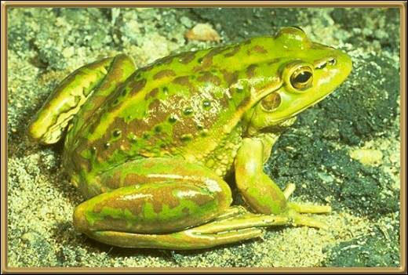

This frog has been found in North-eastern New South Wales,
but nothing is known about it.
Photographer: Unknown
This is the last in the series of frogs, although it barely touches on the frogs of Australia. There are over 220 named species, and who knows how many that we haven't found yet.
Please return Home and choose another area to visit.